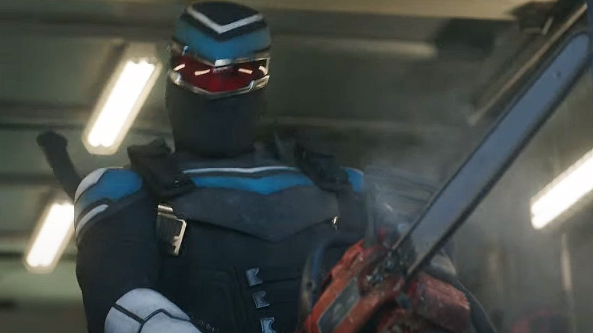
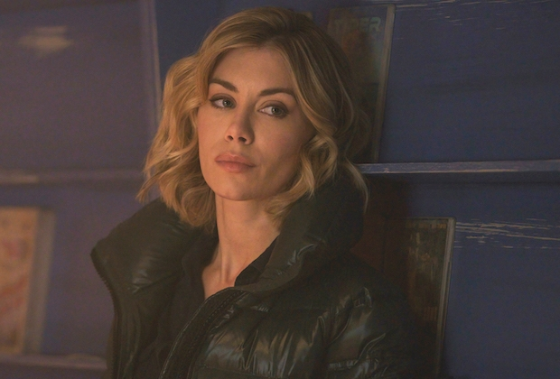
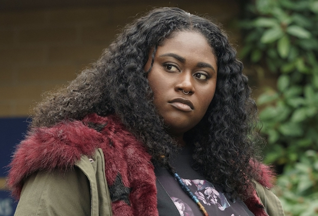
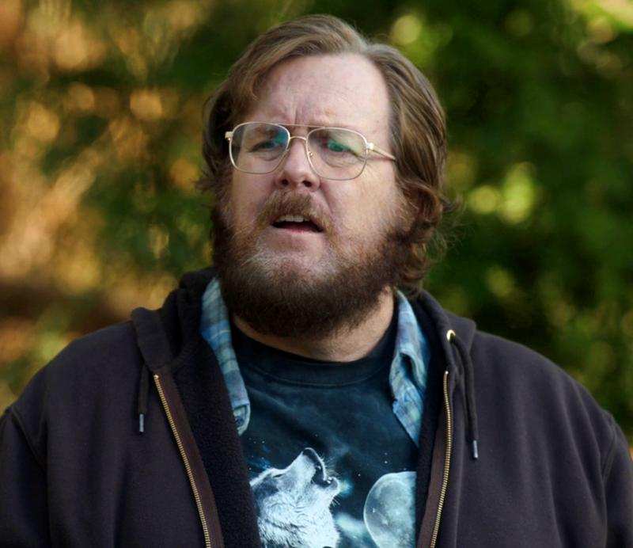
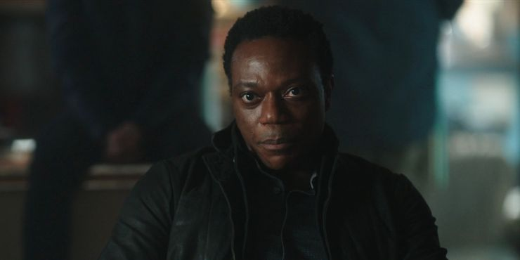

Peacemaker (2022)
Synopsis
Picking up where The Suicide Squad (2021) left off, Peacemaker returns home after recovering from his encounter with Bloodsport - only to discover that his freedom comes at a price.
Trigger warning: This is not a series that holds back. Expletives, sensitive topics, and overall violence are at an extreme when need be.
Teasers
Cast
Main Cast
-

John Cena as Christopher Smith/Peacemaker
-

Freddie Stroma as Adrian Chase/Vigilante
-

Jennifer Holland as Emilia Harcourt/Vigilante
-

Danielle Brookes as Leota Adebayo
-

Steve Agee as John Economos
-

Chukwudi Iwuji as Clemson Murn
Reviews
-
It’s a crass, gunge-smothered action romp and a moving drama about the death of the American Century: come for the thick, gooey substances, stay for the substance.
4/5
-
Gunn scores a bullseye with this series, blending vulgarity, heart and sheer insanity for a winning, killer combo – not to mention, an unskippable opening-credits sequence that you’ll never grow tired of watching.
4/5
-
Thanks to the strength of the ensemble, along with some of the wildest action sequences seen in recent memory, the series does deliver a lot of joy, along with the continued reminder that as Gunns work as a storyteller continues to get better and better.